In the cloud there is no castle wall. There is only who you are, what you may do, and where you may do it from. Today you learn to read, break, and rebuild every policy that decides that — from a single role trust to an org-wide data perimeter.
Hoo. Glad you're here. Nimbus moves cargo between orbital stations and we run it all on ~40 AWS accounts. Last Friday our threat intel team caught chatter from The Kraken Collective — a crew that never bothers with zero-days. They don't need them. They collect permissions: a forgotten iam:PassRole, a trust policy copied from a blog, a bucket policy with "Principal": "*".
Every attack this week will start the same way: with an identity that can do slightly more than anyone intended. So Day 1 is about identity. By tonight I want you to be able to look at any policy in any account and say, out loud and with confidence, allow or deny — and why.
INTERCEPTED · The Kraken Collective · #ops channel
lol nimbus. found a role called KrakenInternRole in their dev account (they named it after us?? flattered). it can PassRole on *. their "launch codes" are one lambda away. also their SaaS vendor trust policy has no external id. monday is going to be fun 🐙
How today works
Five concept modules, each followed by the lab that makes it real. Every lab has predict → test → explain beats: write down what you think AWS will decide before you run the command. Wrong predictions are the point; they're where the learning lives. Steps award XP when you mark them done; flags award more. The boss fight unlocks the Day 1 badge.
Outcomes
By the end of today you will…
Trace any request through AWS's 7-step policy evaluation logic, including RCPs, boundaries, and session policies.
Design an OU guardrail strategy with SCPs, RCPs, and declarative policies using the 2026 quotas and defaults.
Exploit an iam:PassRole escalation, then close it with three independent layers.
Build a working data perimeter (identity, resource, network) and prove each wall holds.
Wire IAM Access Analyzer custom policy checks into CI so bad policies never merge.
Recognise and fix the confused deputy problem for SaaS vendors and AWS service principals.
Pick the right identity path for humans, pipelines, workloads, and AI agents.
Explain which 2026 changes (SCP quotas, default departure SCPs, Identity Center updates) affect your org.
Schedule
09:00
Kickoff — mission briefing, sandbox sanity check 20 min
09:20
Module 1.1 — Policy evaluation logic, all seven steps 40 min
10:00
Lab 1.1 — Policy Evaluation Arena 45 min
10:45
Break ☕
11:00
Module 1.2 — Org guardrails in 2026 35 min
11:35
Lab 1.2 — The PassRole Heist 70 min
12:45
Lunch 🍜
13:30
Module 1.3 — Workforce, machine & agent identity 30 min
14:00
Module 1.5 — Data perimeters 25 min
14:25
Lab 1.3 — Build the Data Perimeter 60 min
15:25
Break 🧃
15:35
Module 1.4 — Least privilege at scale 20 min
15:55
Lab 1.4 — The Least-Privilege Robot 50 min
16:45
Boss fight — The Confused Deputy 35 min
17:20
Quiz & debrief — what surprised you? 10 min
Concepts
The physics of permission
Five modules. Learn the rules once, deeply, and every service on every other day of this week becomes easier to secure.
MODULE 1.1
Policy evaluation logic: all seven steps
Every AWS API call is evaluated against a request context: the principal (who), the action (what), the resource (on what), and a bag of context keys (from where, when, how, with which tags). AWS starts at an implicit deny and lets the request through only if it gets past every gate. Memorise three laws, then the flowchart:
Law 1 — Default deny. If nothing says allow, the answer is no. You never need a policy to deny; you need one to allow.
Law 2 — Explicit deny always wins. One matching "Effect": "Deny" in any policy type — SCP, RCP, resource policy, boundary, identity, session — ends the evaluation.
Law 3 — Guardrails never grant. SCPs, RCPs and permissions boundaries only define a ceiling. An SCP that "allows" s3:* gives nobody anything; it just doesn't block it.
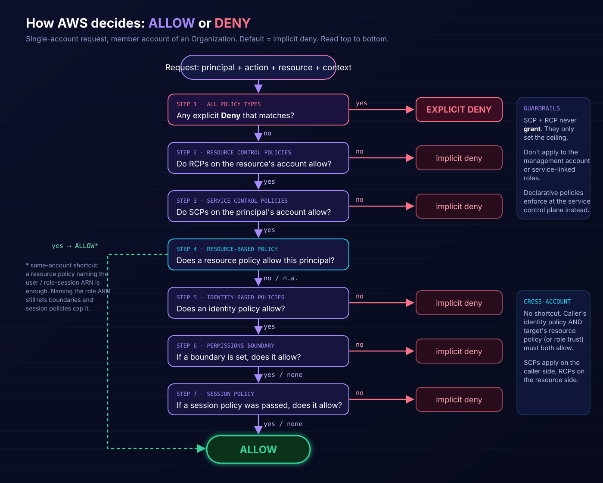
FIG 1.1 The evaluation order for a request inside one member account. Cross-account requests have no shortcut: the caller's identity policy and the target's resource policy must both allow.
The seven policy types, briefly and precisely
Type
Attached to
Can grant?
The thing people forget
Identity-based
user, group, role
✅
Inline vs managed doesn't change evaluation, only lifecycle.
Resource-based
bucket, key, queue, secret, role trust…
✅
A role's trust policy is a resource policy (the role is the resource; the action is sts:AssumeRole).
Permissions boundary
user or role
❌ ceiling
Doesn't limit resource-based policies that name the user/role-session ARN directly.
Session policy
passed at AssumeRole / federation
❌ ceiling
Your Identity Center session can't exceed the permission set; a script's --policy can shrink it further.
SCP
root, OU, account
❌ ceiling
Applies to every principal in member accounts — including the account root user — but not the management account or service-linked roles.
RCP
root, OU, account
❌ ceiling
Applies to resources in member accounts, so it constrains outsiders too. Supported services started with S3, STS, KMS, SQS, Secrets Manager.
Declarative
root, OU, account
n/a
Not IAM at all: it pins a service's configuration (e.g. IMDSv2 default, block public snapshots, GuardDuty enabled). Works even for APIs that would otherwise bypass IAM checks.
Worked example: predict before you peek
Role Analyst in account A has an identity policy allowing s3:GetObject on arn:aws:s3:::nimbus-reports/*. It has a permissions boundary allowing only s3:List*. The bucket policy (same account) allows s3:GetObject to arn:aws:iam::A:role/Analyst. Can Analyst read an object?
Allow, implicit deny, or explicit deny? Name the gate that decides it.
Reveal
Implicit deny. The bucket policy names the role ARN, not the role-session ARN, so the boundary still caps the effective permissions and the boundary doesn't include s3:GetObject. If the bucket policy had named the specific session ARN (arn:aws:sts::A:assumed-role/Analyst/alice), the same-account shortcut would allow it despite the boundary. This edge case is exactly why the flowchart shows a dashed arrow.
Gotcha: NotAction + Allow is a trap
{"Effect":"Allow","NotAction":"iam:*","Resource":"*"} reads like "everything except IAM" — and it grants every action in every service that exists today and every one AWS launches tomorrow. Use NotAction with Deny, almost never with Allow.
Pro tip: let the error message tell you which gate failed
Many services now return enriched AccessDenied messages that name the policy type that blocked you, e.g. "…with an explicit deny in a service control policy" or "…because no identity-based policy allows the action". For encoded messages, aws sts decode-authorization-message reveals the full context. You'll lean on both in the Arena.
MODULE 1.2
Organization guardrails in 2026
Guardrails are the policies that hold even when an account admin makes a mistake — or is the mistake. In 2026 you have three distinct tools, each enforcing at a different layer:
🛑 SCPs — the principal ceiling
"Nobody in these accounts may do X." Region lock, protect security tooling, protect privileged roles, deny root actions.
🧱 RCPs — the resource ceiling
"Nobody, from anywhere, may do X to resources in these accounts." Stops outsiders even if a bucket/key policy is too generous.
📐 Declarative — the config pin
"This service is configured like this, always." IMDSv2, VPC Block Public Access, snapshot/AMI public blocks, GuardDuty and Security Hub CSPM enablement.
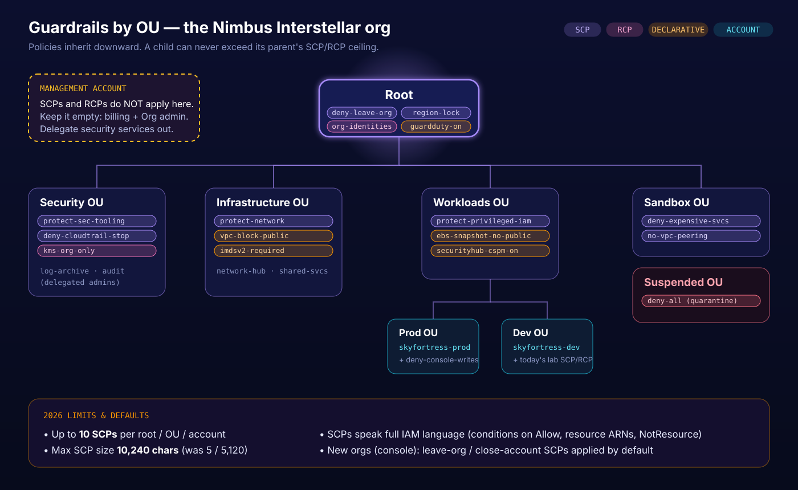
FIG 1.2 Guardrails inherit downward. Design per OU, not per account — accounts move between OUs, policies shouldn't have to.
New in 2025–2026 — what changed in your guardrail toolbox
SCPs speak the full IAM policy language (2025): conditions on Allow statements, individual resource ARNs, NotResource, wildcards in the middle of action names. Allow-list SCPs got far more practical.
Bigger SCP budget (May 2026): up to 10 SCPs per node (was 5) and 10,240 characters per SCP (was 5,120). Fewer minified, unreadable mega-policies.
Departure controls by default (Jul 2026): organizations created in the Organizations console now get SCPs that block member accounts from leaving the org or closing themselves.
Declarative policies grew up: after EC2 (2024), AWS added GuardDuty enablement (Oct 2026) and Security Hub CSPM enablement (Nov 2026). An account can't switch them off from the console or API.
Centralized root access management (since late 2024): delete root credentials from member accounts and run the few root-only tasks with short-lived sts:AssumeRoot sessions from the management account or a delegated admin.
And keep an eye on re:Invent 2026 (Nov 30–Dec 4), which absorbed re:Inforce this year with a dedicated security day on Dec 3. Expect announcements in this area.
Line by line: the region lock uses NotActionwith Deny (the safe direction) to exempt global services whose control planes live in us-east-1. The break-glass exemption uses aws:PrincipalArn — which, unlike aws:userid, matches the role regardless of session name. The telemetry statement is the one the Kraken checks first: if they can StopLogging, Day 2 gets very short.
War story: the SCP that bricked the pipeline
A common real-world outage: a team ships a region-lock SCP without exempting global services, and suddenly CloudFront, IAM, and Route 53 calls from us-west-2 pipelines fail. Always stage guardrails on a test OU first, and watch CloudTrail for errorCode = AccessDenied with SCP in the message for 24 hours before promoting.
Declarative policy: IMDSv2 for every instance, forever
Attach with policy type DECLARATIVE_POLICY_EC2. Notice the syntax: it's the same @@assign inheritance operator family as tag and backup policies, not IAM JSON. There's no Effect because there's nothing to evaluate — the service simply refuses to be configured any other way.
Centralized root: two commands that kill a whole attack class
# Trust IAM to manage root for the org, then turn on both features
aws organizations enable-aws-service-access --service-principal iam.amazonaws.com
aws iam enable-organizations-root-credentials-management
aws iam enable-organizations-root-sessions
# Later: a member account's S3 bucket policy locked everyone out. Only root can fix it.
aws sts assume-root \
--target-principal 111122223333 \
--task-policy-arn arn=arn:aws:iam::aws:policy/root-task/S3UnlockBucketPolicy \
--duration-seconds 900
Pro tip
Once root credentials are deleted from member accounts, nobody can phish a root password or MFA there — there isn't one. New accounts created by Organizations can be born without root credentials. If you also run a "deny root" SCP like the one above, test your AssumeRoot task workflows against it in a test OU before you need them in an emergency.
MODULE 1.3
Workforce, machine & agent identity
The Kraken's favourite credential is an IAM user access key: long-lived, copy-pasteable, and usually sitting in a .env file somewhere. The 2026 answer is that every identity — human, pipeline, workload, or AI agent — should end up holding a short-lived, tagged STS role session.
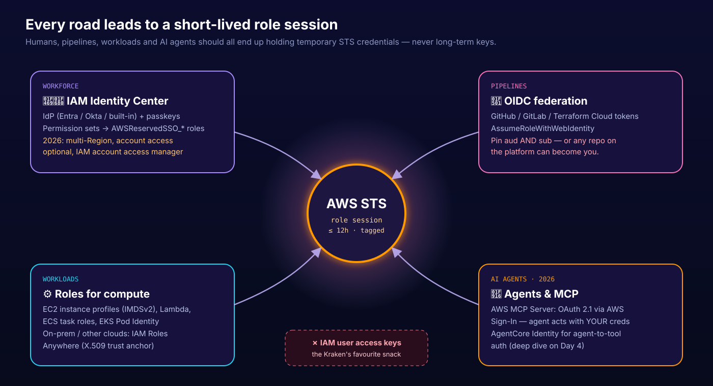
FIG 1.3 Four roads, one destination. If an identity in your org isn't on one of these roads, it's a finding.
Humans: IAM Identity Center
Permission sets become AWSReservedSSO_* roles in each account. Pair with your IdP (or the built-in directory) and require phishing-resistant MFA — passkeys / FIDO2 security keys — for anything privileged.
New in 2026 — Identity Center (August 2026)
One-click multi-Region for new organization instances — single-Region, multi-Region, or custom — so an outage in your home Region doesn't lock humans out.
Account access management is optional for new organization instances. If you only use Identity Center for applications, no service-linked role gets provisioned into member accounts — a smaller footprint.
IAM account access manager lets admins assign existing IAM roles in accounts directly to Identity Center users and groups — handy for migrating hand-built roles without rewriting them as permission sets.
ABAC: one policy, a thousand teams
Instead of a role per team, write one policy that compares the principal's tag to the resource's tag. Tags come from the IdP as session tags (https://aws.amazon.com/SAML/Attributes/PrincipalTag:team) or from sts:TagSession.
ABAC is only as strong as tag integrity. If a principal can call secretsmanager:TagResource or pass arbitrary session tags, it can tag its way into anything. Lock tag keys with an SCP (aws:TagKeys, aws:RequestTag/team) and restrict sts:TagSession in trust policies to IdP-sourced values. The Null check above stops an untagged principal matching an untagged resource (both "empty").
Security researchers have repeatedly found real AWS roles trusting GitHub's OIDC provider with only an aud check, or with sub set to repo:*. That means any repository on GitHub — including one the attacker creates five minutes ago — can mint credentials for the role. Pin the org, repo, and ideally the environment or branch. You'll build exactly this in Lab 1.4.
Workloads outside AWS: IAM Roles Anywhere
On-prem servers and other clouds exchange an X.509 certificate (issued by your private CA, registered as a trust anchor) for STS credentials via aws_signing_helper. No more static keys on the datacenter box. Map certificate attributes into conditions with aws:PrincipalTag/x509Subject/CN.
AI agents: the newest identity on the block
Coding agents and AI assistants now call AWS on your behalf. The AWS MCP Server supports OAuth 2.1 through AWS Sign-In (2026): agents such as Claude Code, Kiro or Gemini CLI connect with your existing IAM credentials through a browser-based login, rather than you pasting keys into a config file. Treat an agent's session like any other: least privilege, short duration, and auditable in CloudTrail. Day 4 goes deep on agent identity and authorization (AgentCore Identity and AgentCore Policy).
Pro tip: give agents their own role
Give an agent its own narrowly scoped role (or permission set) instead of your admin session. When something goes wrong, userIdentity.arn in CloudTrail tells you instantly whether it was you or the robot.
MODULE 1.4
Least privilege at scale
Nobody writes least-privilege policies by hand for 40 accounts. You generate, measure, and gate. IAM Access Analyzer has a tool for each:
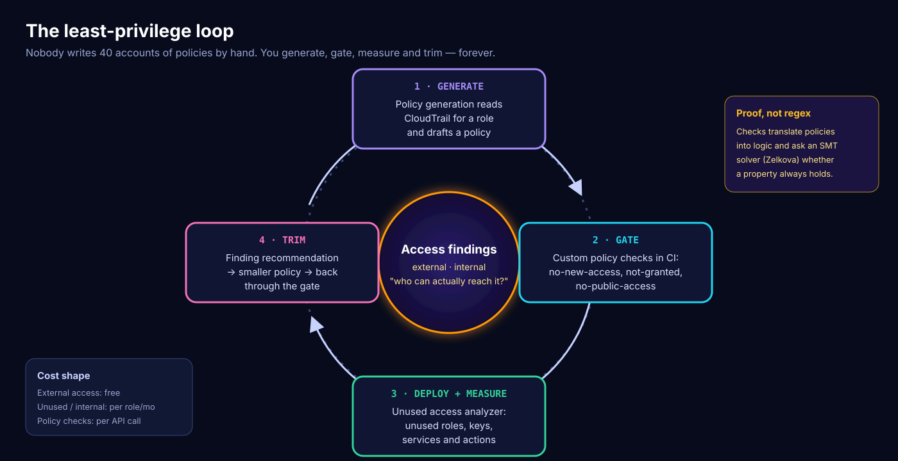
FIG 1.5 The loop you'll automate in Lab 1.4. Every arrow is an Access Analyzer API; the centre answers "who can actually reach it?" at any point in time.
Need
Access Analyzer feature
How it works
"Who outside my zone of trust can reach this?"
External access analyzer
Automated reasoning over resource policies; zone of trust = account or org.
"Who inside my org can reach my crown jewels?"
Internal access findings (2025)
Combines identity policies, resource policies, SCPs, RCPs and boundaries to show which internal principals can reach critical resources you choose.
"Which permissions are never used?"
Unused access analyzer
Flags unused roles, unused access keys/passwords, and unused services/actions, with recommended policy trims.
"Write me a policy from real behaviour."
Policy generation
Reads CloudTrail for a role over a time window and drafts a least-privilege policy.
"Stop bad policies before deploy."
Custom policy checks
check-no-new-access, check-access-not-granted, check-no-public-access — answers proven by automated reasoning, not regex.
Why "automated reasoning" matters
Custom policy checks translate policies into logic formulas and use SMT solvers (AWS's Zelkova engine) to prove properties. A linter can tell you a policy contains s3:*. A prover can tell you that s3:Get* plus a NotResource plus a missing condition is equivalent to public read. That's the difference between style and security.
Cost note
External access analysis is free. Unused access and internal access analysis are billed per resource or role analyzed per month, and custom policy checks are billed per API call — fractions of a cent each, but scope your analyzers for big orgs. Today's lab costs pennies.
MODULE 1.5
Data perimeters
A data perimeter is a set of preventive guardrails ensuring that only trusted identities access trusted resources from expected networks. Each wall needs a different policy type because each is attached to a different thing:
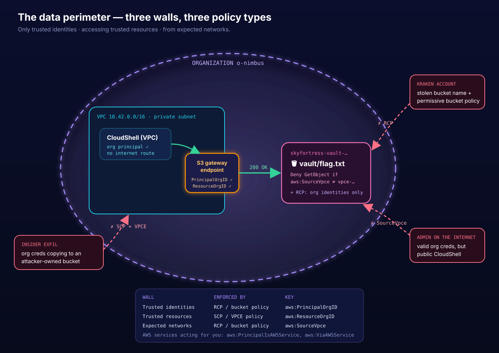
FIG 1.4 Three walls, three attempted breaches, three different blockers. This is exactly what you'll build in Lab 1.3.
When Athena reads S3 for you, or CloudFormation creates a bucket, the call to S3 doesn't come from your VPC endpoint. Without exceptions, your network wall breaks your own tooling. That's why perimeter policies carry aws:ViaAWSService / aws:CalledVia and aws:PrincipalIsAWSService carve-outs. The art is making carve-outs narrow.
Gotcha: AWS-owned resources
A strict "only org resources" SCP also blocks AWS-owned buckets your workloads quietly depend on — package repositories, public datasets, partner data drops. Real perimeters list those exceptions explicitly (the AWS data-perimeter-policy-examples repo on GitHub is the reference). You'll trip over exactly this in Lab 1.3.
War story: "the bucket was private… to every AWS customer"
Older S3 incidents often came down to "Principal": {"AWS": "*"} with a weak or missing condition, or ACLs granting "Authenticated Users" — meaning any AWS account, not your org. An RCP with aws:PrincipalOrgID makes that class of mistake non-exploitable across every bucket at once.
Hands-on
Labs
All labs run from AWS CloudShell in us-east-1, using the profiles you created in Lab 0: sky-mgmt (management account, via the SkyfortressAdmin role), sky-dev and sky-prod (member accounts, via OrganizationAccountAccessRole).
How to read the screenshots
Terminal windows show expected output with placeholder account IDs (111122223333 = dev, 444455556666 = prod, 999988887777 = management); flags are always redacted. Browser-framed screens are illustrative mock-ups of the console. Click any figure or screenshot to enlarge it. Every lab offers a guided path (numbered steps) and a challenge path (goal + acceptance criteria only); pick one per lab.
Sandbox only
Lab 1.2 and the boss fight deploy deliberately vulnerable resources. Never deploy them into an account that matters, and run every cleanup block. Your $25 budget alarm from Lab 0 is your safety net, not your plan.
Grab today's lab kit
mkdir -p ~/sky/day1/robot/policies ~/sky/day1/robot/reference ~/sky/day1/confused-deputy && cd ~/sky/day1
BASE="__SITE__labs/day1"
for f in arena.yaml passrole-heist.yaml heist_payload.py intern-fixed-policy.json intern-boundary.json \
scp-protect-privileged-roles.json data-perimeter.yaml rcp-org-only-resources.json \
scp-org-only-resources.json \
robot/check_policies.py robot/policy-robot.yml robot/github-oidc-role.yaml \
robot/reference/baseline-identity.json \
robot/policies/01-robots.identity.json robot/policies/02-dream.identity.json \
robot/policies/03-never.bucket.json robot/policies/04-of.bucket.json \
robot/policies/05-sleep.identity.json \
confused-deputy/vendor.yaml confused-deputy/victim.yaml confused-deputy/fixed-trust-policy.json; do
curl -fsSL "$BASE/$f" -o "$f" && echo "✓ $f"
done
# sanity check: all three profiles answer
for p in sky-mgmt sky-dev sky-prod; do echo -n "$p → "; aws sts get-caller-identity --profile $p --query Account --output text; done
Already cloned the course repo in Lab 0? Skip the downloads and point the lab folder at it instead: mkdir -p ~/sky && ln -sfn ~/skyfortress/labs/day1 ~/sky/day1. Browse every file in labs/day1/.
$for p in sky-mgmt sky-dev sky-prod; do …; donesky-mgmt → 999988887777
sky-dev → 111122223333
sky-prod → 444455556666
Three different account IDs. If a line errors with AccessDenied on AssumeRole, re-run ~/skyfortress/labs/setup/verify.sh from Lab 0.
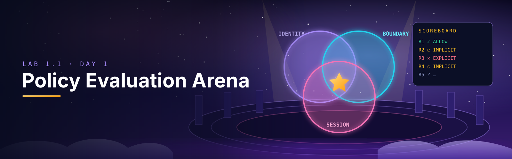
Lab 1.1
Policy Evaluation Arena
Intermediate⏱ 45 min💸 ~$0.00IAM · STS · S3 · SSM
Goal: five rounds, each one a single API call made by the same role, each with a different outcome. Before every round you'll predict ALLOW / IMPLICIT DENY / EXPLICIT DENY, then prove it with the IAM policy simulator and a real call. Round 5 hides a flag behind ABAC.
Follow the ten numbered steps (eight of them are rounds). Each round gives you the command, a prediction prompt, and the expected result.
Goal: using only the SkyfortressArenaContestant role, produce a scoreboard of six outcomes (read, write, delete, read-with-session-policy, untagged parameter read, tagged parameter read). Constraints: don't edit any policy in arena.yaml. Accept when: for each round you can quote the error string that names the deciding gate, and you've read the flag parameter legitimately.
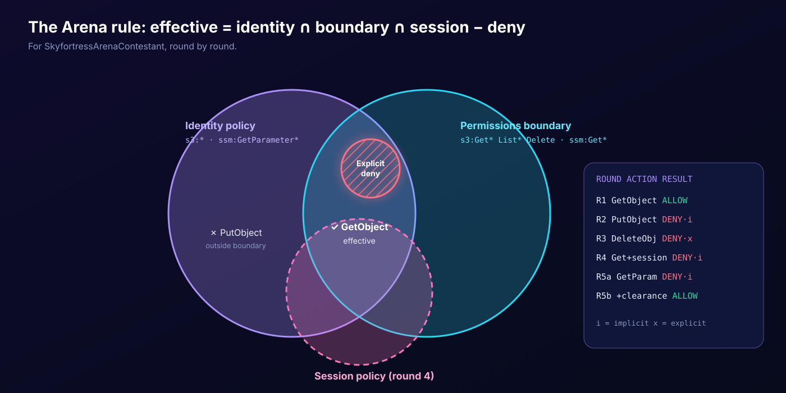
FIG L1.1 The arena's geometry. Only the overlap of every applicable policy, minus the hatched deny, is effective.
What gets deployed (arena.yaml): a bucket with an explicit-deny-delete bucket policy; role SkyfortressArenaContestant with a generous identity policy (s3:* on the bucket, ABAC-gated ssm:GetParameter); a permissions boundary that only allows s3:Get*/List*/DeleteObject and ssm:Get*; and an SSM parameter holding the flag.
The identity policy allows s3:*. Does that matter? Check with the simulator first — it evaluates the role's identity policies and its boundary:
The identity policy says s3:*. Will the write succeed, and if not, which of the seven gates stops it?
Reveal
Implicit deny at the permissions boundary. The boundary allows only s3:Get*, s3:List* and s3:DeleteObject. A boundary is a ceiling: anything it doesn't list is denied, no matter how generous the identity policy is.
Read the real error carefully: it should name the permissions boundary as the reason. That's an implicit deny: nothing denied it, the boundary simply didn't allow it.
$aws iam simulate-principal-policy … --output table-------------------------------------------------
| SimulatePrincipalPolicy |
+-----------------+-----------------+-----------+| s3:PutObject | implicitDeny | False || s3:GetObject | allowed | True |+-----------------+-----------------+-----------+$echo "pwned" | contestant aws s3 cp - "s3://$BucketName/kraken-was-here.txt"upload failed: - to s3://skyfortress-arena-111122223333/kraken-was-here.txt An error occurred (AccessDenied) when calling the PutObject operation: User: arn:aws:sts::111122223333:assumed-role/SkyfortressArenaContestant/arena-20417 is not authorized to perform: s3:PutObject on resource: "arn:aws:s3:::skyfortress-arena-111122223333/kraken-was-here.txt" because no permissions boundary allows the s3:PutObject action
The third column is AllowedByPermissionsBoundary. The real error names the same gate, in plain English.
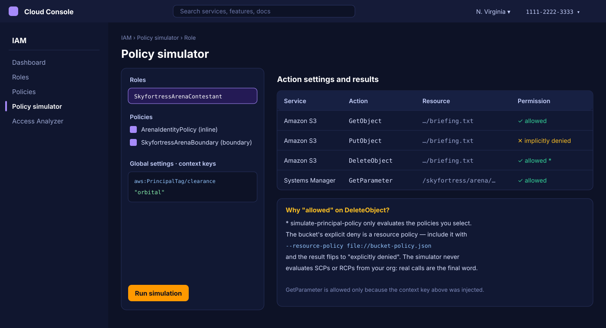
SCREEN 1.1 The same rounds in the console simulator. Notice it says DeleteObject is allowed: the simulator only evaluates the policies you give it, so it misses the bucket's explicit deny unless you pass --resource-policy. It never evaluates your org's SCPs or RCPs. Illustrative mock-up; the live console layout may differ.
Round 3 — DeleteObject
Identity ✓ (s3:*), boundary ✓ (s3:DeleteObject is in it on purpose). Now what?
Will the contestant's delete work? Will your admin's delete work?
Reveal
Both fail with an explicit deny from the bucket policy. An explicit deny in any applicable policy ends evaluation, and resource policies apply to every caller, including admins in the same account.
contestant aws s3 rm "s3://$BucketName/briefing.txt"
# admins can't do it either — explicit deny in a resource policy binds everyone:
aws s3 rm "s3://$BucketName/briefing.txt"
Both fail with an explicit deny in a resource-based policy. Law 2 in action: even your admin session can't override it. (Only editing the bucket policy can — which is why the bucket policy itself is the thing to protect.)
$contestant aws s3 rm "s3://$BucketName/briefing.txt"delete failed: s3://skyfortress-arena-111122223333/briefing.txt An error occurred (AccessDenied) when calling the DeleteObject operation: User: arn:aws:sts::111122223333:assumed-role/SkyfortressArenaContestant/arena-8812 is not authorized to perform: s3:DeleteObject on resource: "arn:aws:s3:::skyfortress-arena-111122223333/briefing.txt" with an explicit deny in a resource-based policy$aws s3 rm "s3://$BucketName/briefing.txt"delete failed: … User: arn:aws:sts::111122223333:assumed-role/OrganizationAccountAccessRole/botocore-session-1732… is not authorized to perform: s3:DeleteObject … with an explicit deny in a resource-based policy
Same gate for both callers. Compare the wording with Round 2: “no permissions boundary allows” (implicit) versus “with an explicit deny in” (explicit).
Round 4 — the same GetObject, with a session policy
Assume the role passing an inline session policy that allows only s3:ListBucket. Round 1 worked… does it still?
The role and boundary haven't changed. Does the listing work? Does the read?
Reveal
The listing works; the read is an implicit deny at the session policy. Effective permissions are the intersection of the identity policy, the boundary, and the session policy, and the session policy only includes s3:ListBucket.
The listing works; the read doesn't. Session policies are how tools (and Identity Center) shrink a role for one session — a great pattern for handing a script or an AI agent a strictly narrower slice of your role.
$contestant aws s3 ls "s3://$BucketName/"
2026-11-30 09:41:12 20 briefing.txt
$contestant aws s3 cp "s3://$BucketName/briefing.txt" -fatal error: An error occurred (403) when calling the HeadObject operation: Forbidden
Where's the helpful message? aws s3 cp calls HeadObject before downloading, and HEAD responses have no body, so S3 can only return a bare 403. To see the reason, call contestant aws s3api get-object --bucket "$BucketName" --key briefing.txt /dev/stdout instead.
The identity policy has an ssm:GetParameter statement for this parameter. Allowed?
Reveal
Implicit deny. That statement has a condition on aws:PrincipalTag/clearance, and a statement whose condition doesn't match simply doesn't apply. Then nothing allows the call.
Denied. The identity policy's statement only matches when aws:PrincipalTag/clearance equals orbital — and your session has no tags. Confirm with the simulator by injecting the context key:
$contestant aws ssm get-parameter --name /skyfortress/arena/flagAn error occurred (AccessDeniedException) when calling the GetParameter operation: User: arn:aws:sts::111122223333:assumed-role/SkyfortressArenaContestant/arena-3391 is not authorized to perform: ssm:GetParameter on resource: arn:aws:ssm:us-east-1:111122223333:parameter/skyfortress/arena/flag because no identity-based policy allows the ssm:GetParameter action$aws iam simulate-principal-policy … --context-entries …clearance…orbital…"allowed"
The simulator says the policy would allow it if the tag were present. Next step: make it present.
Round 5b — earn your clearance
Session tags become principal tags for the life of the session. The trust policy allows sts:TagSession, so…
A single line in the SKY{…} format (redacted here). Paste it into the flag box below.
Explain it back
In your notebook, write one sentence per round naming which gate decided it (use FIG 1.1's step numbers). Then answer: "If the trust policy didn't include sts:TagSession, what would Round 5b's error be, and from which API?"
Decode an authorization message (bonus technique)
Some services (notably EC2) return an encoded authorization failure. Trigger one and decode it — it shows the full request context AWS evaluated:
Your admin session needs sts:DecodeAuthorizationMessage (admins have it). If the command returns nothing, your CLI printed a plain error instead — that's fine, read it directly.
Your scoreboard should match FIG L1.1: R1 ALLOW · R2 implicit (boundary) · R3 explicit (resource policy) · R4 implicit (session policy) · R5a implicit (condition not met) · R5b ALLOW. If R2 succeeded, check that the stack really attached the boundary: aws iam get-role --role-name SkyfortressArenaContestant --query Role.PermissionsBoundary.
Troubleshooting
Symptom
Likely cause
Fix
contestant prints nothing and returns 255
$RoleArn is empty (the eval ran in another shell)
Re-run the eval line from step 1 in this shell
Round 2's upload succeeds
The boundary isn't attached, or you ran it as admin instead of via contestant
aws iam get-role --role-name SkyfortressArenaContestant --query Role.PermissionsBoundary
(403) … HeadObject … Forbidden with no reason
aws s3 cp issues a HEAD request first, and HEAD responses can't carry an error body
Repeat with aws s3api get-object --bucket … --key … /dev/stdout to see the enriched message
AccessDenied on AssumeRole only when passing --tags
The trust policy doesn't allow sts:TagSession
Restore the original arena.yaml trust policy
Decode step: MSG is empty
Your CLI printed a non-encoded error (common for --dry-run with a fake AMI)
Read the plain error; the technique still applies to EC2 errors that are encoded
Hint: "AccessDenied when calling AssumeRole" in Round 5b
That's the trust policy, not the identity policy. Passing --tags requires sts:TagSession to be allowed in the role trust policy for your caller. The arena template includes it; if you edited the template, put it back.
Hint: role chaining and the 1-hour limit
If your CloudShell identity is itself an assumed role (it is, via Identity Center or Lab 0's admin role), then contestant is role chaining. Chained sessions are capped at 1 hour regardless of MaxSessionDuration. Not a problem here, but it bites long-running scripts.
Write a sixth round of your own: make the contestant fail only because of an SCP. Attach a tiny SCP to skyfortress-dev from sky-mgmt that denies s3:GetObject when aws:PrincipalTag/clearance equals orbital, then rerun Round 1 with and without the tag. Detach it afterwards.
# The bucket policy blocks object deletion for everyone, so remove the policy first, then empty + delete:
aws s3api delete-bucket-policy --bucket "$BucketName"
aws s3 rm "s3://$BucketName" --recursive
aws cloudformation delete-stack --stack-name sky-arena
Notice what you just did: to delete protected data, you had to change the policy. In production that policy edit should itself be blocked by an SCP or RCP.
Goal: play the Kraken. Starting from a compromised intern role that cannot read secrets, steal the launch codes by passing a privileged role to a Lambda you create. Then put on your blue hat and close the hole with three independent layers — so that any one of them alone would have stopped you.
Part A (red, 8 steps) then Part B (blue, 6 steps). Every command is given; every step ends with something to check.
Goal: starting as KrakenInternRole, read skyfortress/heist/launch-codes. Then make that impossible three ways. Constraints: never use your admin session for the attack; don't delete NimbusOpsAutomationRole. Accept when: you have the flag, and you can show three different AccessDenied messages (identity policy, boundary, SCP) for the same create-function call, while the intern can still deploy a Lambda with its sandbox role.
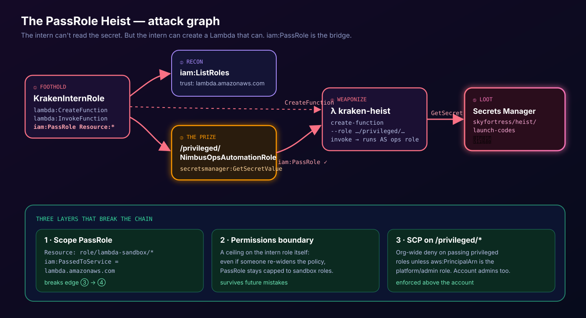
FIG L1.2 PassRole turns "can create compute" into "can become any role that compute may assume".
Why PassRole exists
When you create a Lambda, EC2 instance, ECS task, Glue job, or Step Functions state machine, you hand AWS a role for it to assume later. iam:PassRole is AWS asking: "are you allowed to give this role to this service?" It's not an API you call — it's a permission checked during another call, which is why it never shows up as its own CloudTrail event.
AccessDenied — no identity-based policy allows it. Good. The Kraken shrugs and looks for a side door.
$intern aws secretsmanager get-secret-value --secret-id skyfortress/heist/launch-codesAn error occurred (AccessDeniedException) when calling the GetSecretValue operation: User: arn:aws:sts::111122223333:assumed-role/KrakenInternRole/kraken is not authorized to perform: secretsmanager:GetSecretValue on resource: skyfortress/heist/launch-codes because no identity-based policy allows the secretsmanager:GetSecretValue action
The front door is shut. Remember this message; you'll want to compare it with what the Lambda gets.
Recon: which roles can Lambda assume?
intern aws iam list-roles --query 'Roles[].[RoleName,Path]' --output table
intern aws iam get-role --role-name NimbusOpsAutomationRole \
--query 'Role.{Path:Path,Trust:AssumeRolePolicyDocument.Statement[0].Principal,Tags:Tags}'
A role under /privileged/, trusted by lambda.amazonaws.com, tagged tier=privileged. Attackers love descriptive naming.
Weaponise: package the payload
Read heist_payload.py first — it just calls GetSecretValue with whatever role the function runs as.
zip -q heist.zip heist_payload.py && ls -la heist.zip
Predict, then create the function with the privileged role
The intern's policy allows lambda:CreateFunction and iam:PassRole on *. Will AWS let it pass a /privileged/ role?
The intern can't read the secret. Can it create a function that runs as a role that can?
Reveal
Yes.iam:PassRole on * means "may hand any role to any service". AWS checks only that the caller may pass the role; it doesn't compare the role's power with the caller's. That gap is the whole heist.
The function's session name is the function name. In CloudTrail, the secret was read by NimbusOpsAutomationRole, not by the intern. Today's planted flags are base64-encoded so nobody spoils them with a quick grep of the templates: decode, then submit.
Think like a detector
What would Day 2's SOC see? Look for the CloudTrail event (Lambda's create API is logged with a versioned name):
The detection signal is "a principal created compute with a role more privileged than itself". Note there's no PassRole event to alert on — you have to infer it from requestParameters.role.
Part B — Blue team: three layers
Layer 1 — scope PassRole to the right roles, for the right service
Open intern-fixed-policy.json. The new statement allows passing only roles under /lambda-sandbox/, and only to Lambda (iam:PassedToService). Apply it:
aws iam put-role-policy --role-name KrakenInternRole --policy-name InternDeveloperAccess \
--policy-document file://intern-fixed-policy.json
Layer 2 — a permissions boundary as a permanent ceiling
Layer 1 is one careless "Resource": "*" away from regressing. A boundary caps the role no matter what future identity policies say. Read intern-boundary.json — note the Deny on /privileged/*.
BOUNDARY_ARN=$(aws iam create-policy --policy-name SkyfortressDeveloperBoundary \
--policy-document file://intern-boundary.json --query Policy.Arn --output text)
aws iam put-role-permissions-boundary --role-name KrakenInternRole --permissions-boundary "$BOUNDARY_ARN"
The real-world pattern
Boundaries shine in delegated role creation: let developers call iam:CreateRole only with condition "iam:PermissionsBoundary": "arn:…:policy/SkyfortressDeveloperBoundary". They can self-serve roles, but never mint one stronger than the boundary.
Layer 3 — an SCP that protects privileged roles org-wide
Even an account admin who widens both policies can't pass /privileged/ roles now. First, open scp-protect-privileged-roles.json and confirm the aws:PrincipalArn exemption list covers the role you use in dev (run aws sts get-caller-identity --profile sky-dev; with Lab 0's setup it's OrganizationAccountAccessRole, which is already listed). Then, from the management account:
The file already exempts OrganizationAccountAccessRole (your sky-dev profile), SkyfortressAdmin, and Identity Center's AWSReservedSSO_AdministratorAccess_* roles. If you reach the dev account any other way, add your role first. Get the exemption wrong and the SCP will also stop you passing privileged roles, and stop CloudFormation stacks that need to. That's recoverable (the management account isn't affected by SCPs, so you can always detach it from sky-mgmt), but it's exactly why SCPs ship to a test OU first.
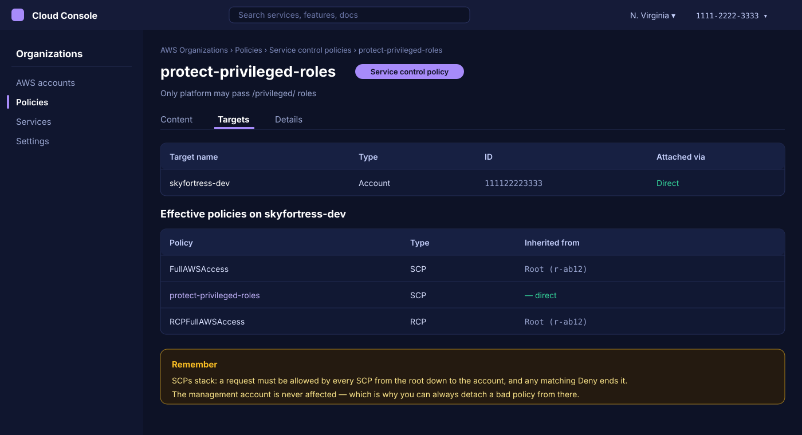
SCREEN 1.2 After attaching: Targets shows the account, and the account's effective policies show both the inherited FullAWSAccess and your new SCP. Illustrative mock-up; the live console layout may differ.
The function deploys fine (developers stay productive) but returns an AccessDenied on the secret. That's least privilege: the job still works, the heist doesn't.
Prove the layers are independent, part 1: break Layer 1
Defence in depth is only real if each layer holds on its own. Define a one-line attack, then deliberately regress the identity policy to the vulnerable version (PassRole on *). The boundary and SCP should still stop you.
Verify: the first error blames no identity-based policy; the second blames the permissions boundary.
Prove the layers are independent, part 2: break Layer 2, then restore
# Regress Layer 2 as well
aws iam delete-role-permissions-boundary --role-name KrakenInternRole
sleep 10; echo "SCP only:"; attempt
# Restore Layers 1 and 2
aws iam put-role-policy --role-name KrakenInternRole --policy-name InternDeveloperAccess --policy-document file://intern-fixed-policy.json
aws iam put-role-permissions-boundary --role-name KrakenInternRole --permissions-boundary "$BOUNDARY_ARN"
aws iam get-role --role-name KrakenInternRole --query Role.PermissionsBoundary.PermissionsBoundaryArn
Verify: "SCP only" blames a service control policy, and the last command prints the boundary ARN again.
IAM changes are eventually consistent — the sleeps give them a moment. Read which policy type each error message blames.
$attempt # Layer 1 fixed (scoped PassRole)An error occurred (AccessDeniedException) when calling the CreateFunction operation: User: arn:aws:sts::111122223333:assumed-role/KrakenInternRole/kraken is not authorized to perform: iam:PassRole on resource: arn:aws:iam::111122223333:role/privileged/NimbusOpsAutomationRole because no identity-based policy allows the iam:PassRole actionboundary + SCP:… is not authorized to perform: iam:PassRole on resource: arn:aws:iam::111122223333:role/privileged/NimbusOpsAutomationRole with an explicit deny in a permissions boundarySCP only:… is not authorized to perform: iam:PassRole on resource: arn:aws:iam::111122223333:role/privileged/NimbusOpsAutomationRole with an explicit deny in a service control policy
Three runs, three different gates. If a service returns a shorter message without the because/with clause, use CloudTrail's errorMessage field instead: the reason is recorded there.
With Layers 1 and 2 removed, the only thing left is the SCP. Could the intern work around it by passing the role to a different service, like EC2?
Reveal
No. The SCP denies iam:PassRole on role/privileged/* for every service and every principal except the exempt admin roles. The service doesn't matter; the role path does. That's why the SCP is the layer that survives future mistakes.
You have: the flag from Part A; three error messages from Part B (identity policy, boundary, SCP) each blocking the same create-function call; and intern-hello working with the sandbox role. If the SCP never seems to bite, give it ~60 seconds and confirm the attachment: aws organizations list-policies-for-target --target-id $DEV_ID --filter SERVICE_CONTROL_POLICY --profile sky-mgmt.
Troubleshooting
Symptom
Likely cause
Fix
create-function fails with InvalidParameterValueException: The role defined for the function cannot be assumed by Lambda
IAM eventual consistency right after stack creation
Wait 10–15 seconds and retry
loot.json contains error instead of loot
You passed a role that can't read the secret (for example the sandbox role)
Check the --role ARN includes /privileged/
Part B, Layer 3: the heist still works after attaching the SCP
SCPs take a short time to apply, or you attached it to the wrong target
Your admin can't update or delete the stack after Layer 3
Your dev role isn't in the SCP's exemption list
Detach the SCP from sky-mgmt, add your role ARN, re-create it
lookup-events returns nothing for CreateFunction20150331
CloudTrail event history lags by up to ~5–15 minutes
Do Part B first and come back to it
Full solution notes: other PassRole escalation paths
Lambda is just one of many. The same pattern works with any service that takes a role: ec2:RunInstances + instance profile, ecs:RegisterTaskDefinition + ecs:RunTask, glue:CreateDevEndpoint, cloudformation:CreateStack with --role-arn, datapipeline, sagemaker:CreateNotebookInstance, codebuild:CreateProject. Related escalations that don't need PassRole at all: iam:CreatePolicyVersion (set a new default version), iam:AttachRolePolicy on your own role, iam:UpdateAssumeRolePolicy, and lambda:UpdateFunctionCode on an existing function that already runs as a privileged role. Your Layer 3 SCP covers the tampering half; the boundary's Deny on /privileged/* covers the rest for this role.
Find the no-PassRole path: grant the intern lambda:UpdateFunctionCode on *, have your admin create a legit function running as NimbusOpsAutomationRole, and show the intern can hijack it by swapping its code. Then write the one-statement fix.
for f in kraken-heist kraken-heist2 kraken-heist3 intern-hello; do aws lambda delete-function --function-name $f 2>/dev/null; done
aws iam delete-role-permissions-boundary --role-name KrakenInternRole
aws iam delete-policy --policy-arn "$BOUNDARY_ARN"
aws cloudformation delete-stack --stack-name sky-heist
aws organizations detach-policy --profile sky-mgmt --policy-id "$SCP_ID" --target-id "$DEV_ID"
aws organizations delete-policy --profile sky-mgmt --policy-id "$SCP_ID"
# Secrets Manager schedules deletion (7–30 days). Force it now for the lab:
aws secretsmanager delete-secret --secret-id skyfortress/heist/launch-codes --force-delete-without-recovery 2>/dev/null
Goal: build all three walls from FIG 1.4 around one vault bucket in skyfortress-dev, and prove each one by attacking it. The flag is in vault/flag.txt — readable only through your VPC endpoint. Not even your admin session can read it from the internet.
Ten steps: deploy, test from outside, step inside with a CloudShell VPC environment, then add the RCP and SCP and re-test.
Goal: read vault/flag.txt, then prove four distinct denials. Constraints: you may not edit the vault bucket policy's network deny or the endpoint policy. Accept when: you can show (1) a vault read from the internet denied by the bucket policy, (2) a non-org bucket denied from inside the VPC by the endpoint policy, (3) an outsider denied by an RCP, and (4) a non-org bucket denied from the internet by an SCP, each with the error that names its policy type.
FIG L1.3 Your build. Each red arrow is a test you'll run.
What gets deployed (data-perimeter.yaml): a VPC with one private subnet and no internet route; an S3 gateway endpoint whose policy requires both aws:PrincipalOrgID and aws:ResourceOrgID; a vault bucket denying GetObject on vault/* unless aws:SourceVpce matches; a custom resource that seeds the flag; and a security group for a CloudShell VPC environment. Then you'll add an RCP and an SCP by hand.
aws s3 cp "s3://$VaultBucket/public-notes/readme.txt" - # A
aws s3 cp "s3://$VaultBucket/vault/flag.txt" - # B
aws s3 ls s3://noaa-ghcn-pds/ | head -3 # C (an AWS Open Data bucket, outside your org)
A works, B is denied by the bucket policy (wrong network), C works — for now. Hold on to C.
Your admin session owns this bucket. Will B work from the public CloudShell?
Reveal
No: explicit deny in a resource-based policy. The vault statement denies s3:GetObject on vault/* to every principal unless aws:SourceVpce is your endpoint, and public CloudShell traffic doesn't use that endpoint.
$aws s3 cp "s3://$VaultBucket/public-notes/readme.txt" - # A
Welcome to the Nimbus vault. Nothing to see here.
$aws s3 cp "s3://$VaultBucket/vault/flag.txt" - # Bfatal error: An error occurred (403) when calling the HeadObject operation: Forbidden$aws s3api get-object --bucket "$VaultBucket" --key vault/flag.txt /dev/stdout # B, with the reasonAn error occurred (AccessDenied) when calling the GetObject operation: User: arn:aws:sts::111122223333:assumed-role/OrganizationAccountAccessRole/botocore-session-1732… is not authorized to perform: s3:GetObject on resource: "arn:aws:s3:::skyfortress-vault-111122223333/vault/flag.txt" with an explicit deny in a resource-based policy$aws s3 ls s3://noaa-ghcn-pds/ | head -3 # C PRE csv.gz/
PRE csv/
PRE parquet/
aws s3 cp hides the reason behind a HEAD request; s3api get-object reveals it. The readme text and open-data listing may differ; what matters is A ✓, B ✕ (resource policy), C ✓.
Step inside the perimeter: a CloudShell VPC environment
CloudShell can launch an environment inside your VPC. In the console, switch to the skyfortress-dev account, open CloudShell → Actions → Create VPC environment, and choose:
Alternative if your console account differs: launch a small EC2 instance in that subnet and connect with Session Manager. That needs SSM interface endpoints (~$0.03/hr) — CloudShell VPC is free.
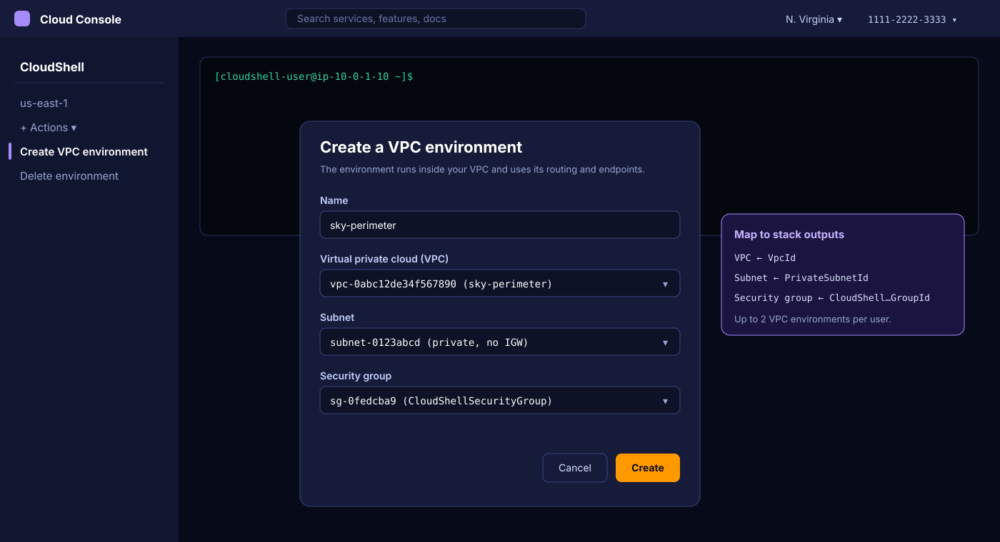
SCREEN 1.3 Map each field to a stack output. If the VPC dropdown is empty, you're signed in to the wrong account in the console. Illustrative mock-up; the live console layout may differ.
Verify: a new tab opens named sky-perimeter, and curl -m 5 https://example.com in it times out.
Read the vault from inside
In the VPC environment tab (paste your bucket name — env vars don't carry over):
export AWS_REGION=us-east-1
aws s3 cp s3://skyfortress-vault-<DEV_ACCOUNT_ID>/vault/flag.txt - | base64 -d; echo # 🚩
aws s3 ls s3://noaa-ghcn-pds/ | head -3 # blocked: endpoint policy (ResourceOrgID)
curl -m 5 https://example.com || echo "no internet route — as designed"
The flag prints. The open-data bucket fails — this time the VPC endpoint policy refused because that bucket isn't in your org. You just saw the network wall and a resource wall in one shell.
$aws s3 cp s3://skyfortress-vault-111122223333/vault/flag.txt - | base64 -d; echoSKY{███████████████████}$aws s3 ls s3://noaa-ghcn-pds/ | head -3An error occurred (AccessDenied) when calling the ListObjectsV2 operation: User: arn:aws:sts::111122223333:assumed-role/OrganizationAccountAccessRole/… is not authorized to perform: s3:ListBucket on resource: "arn:aws:s3:::noaa-ghcn-pds" because no VPC endpoint policy allows the s3:ListBucket action$curl -m 5 https://example.com || echo "no internet route — as designed"curl: (28) Connection timed out after 5001 milliseconds
no internet route — as designed
Inside the perimeter the vault opens, and the endpoint itself refuses to carry traffic to buckets outside your org.
AWS automatically attaches RCPFullAWSAccess everywhere. Like FullAWSAccess for SCPs, it doesn't grant anything — it just means "no ceiling yet".
Prepare an "outsider" test
You need a request from outside your org. Pick one:
Pair with a classmate (different org). Add a statement to your vault bucket policy granting their account s3:GetObject on public-notes/*, then have them run aws s3 cp s3://YOUR_BUCKET/public-notes/readme.txt -. It should work now — a perfectly normal cross-account grant.
If put-bucket-policy fails, account-level Block Public Access is on (aws s3control get-public-access-block --account-id $DEV_ID). Either use the buddy test or turn it off temporarily and turn it back on in cleanup.
Raise the identity wall: attach the RCP
Read rcp-org-only-resources.json. Three statements: org identities only, confused-deputy protection for AWS service principals (aws:SourceOrgID), and TLS only. Note "Principal": "*" — mandatory in RCPs — and the IfExists operators, which make the deny apply to anonymous callers (no PrincipalOrgID key at all).
Re-run your outsider test. Buddy: AccessDenied. Solo: curl now returns 403. The bucket policy still says "allow" — the RCP is a ceiling above it, set by the org, that the account can't remove.
The test bucket's policy still says "Principal": "*". After attaching the RCP, does the anonymous curl still get 200?
Reveal
No, 403. An anonymous request has no aws:PrincipalOrgID, so StringNotEqualsIfExists matches, and aws:PrincipalIsAWSService is false. The RCP's deny applies, and a deny beats the bucket policy's allow.
Same bucket policy, same object. The org-level ceiling turned a public object private. Give the RCP up to a minute to take effect.
Raise the resource wall: attach the SCP
Read scp-org-only-resources.json: org principals may only read/write S3 objects in org-owned buckets, except when CloudFormation or Athena calls on their behalf, or for an explicit /perimeter-exempt/ role path.
sed "s/o-REPLACEME/$ORG_ID/g" scp-org-only-resources.json > scp-res.json
SCPR_ID=$(aws organizations create-policy --profile sky-mgmt --type SERVICE_CONTROL_POLICY \
--name s3-org-resources-only --description "No reading/writing buckets outside the org" \
--content file://scp-res.json --query Policy.PolicySummary.Id --output text)
aws organizations attach-policy --profile sky-mgmt --policy-id "$SCPR_ID" --target-id "$DEV_ID"
sleep 30; aws s3 ls s3://noaa-ghcn-pds/ --profile sky-dev | head -3 # test C again
Test C now fails from the public CloudShell too: explicit deny in a service control policy (…is not authorized to perform: s3:ListBucket on resource: "arn:aws:s3:::noaa-ghcn-pds" with an explicit deny in a service control policy). This is the wall that stops an insider (or a Kraken with stolen creds) from copying data into s3://kraken-loot — even though their own bucket policy would happily accept it.
Map every test to its wall
Fill in this table in your notes, then compare with the hint:
Four tests, four denials, four different policy types, and one flag read from inside the VPC. If the RCP didn't change your outsider result, confirm it's attached to the account that owns the bucket (RCPs apply to resources in the target account): aws organizations list-policies-for-target --target-id $DEV_ID --filter RESOURCE_CONTROL_POLICY --profile sky-mgmt.
Troubleshooting
Symptom
Likely cause
Fix
Stack fails: OrgId parameter pattern
$ORG_ID is empty because sky-mgmt isn't set up
Re-run step 1 and check that it prints org=o-…
Commands in the VPC environment hang
No route to the gateway endpoint, or the SG blocks egress 443
The stack associates the route table; check you chose PrivateSubnetId and the stack's SG
Fast 403 … HeadObject inside the VPC
Route works, but a policy said no (you used the wrong bucket name?)
Use the exact bucket name skyfortress-vault-<dev account>; check with s3api get-object
put-bucket-policy fails in the solo test
Account-level S3 Block Public Access is on (good!)
Use the buddy test, or disable BPA temporarily and restore it in cleanup
The RCP doesn't change the outsider result
RCP attached to the wrong account, or the outsider is in your org
RCPs apply to resources in the account they're attached to; attach to $DEV_ID
After the SCP, CloudFormation in dev can't read templates or artifacts
Your SCP blocks S3 buckets outside the org
That's the AWS-owned-resource gotcha; the SCP already exempts calls made via CloudFormation, so check that the call really is via CFN
Hint: my VPC environment can't reach S3 at all
The gateway endpoint must be associated with the subnet's route table (the stack does this), the security group must allow egress on 443, and you must use the regional endpoint (AWS_REGION=us-east-1). A hanging command usually means the route is missing; a fast 403 means the route works and a policy said no.
Where this goes in production
Real perimeters live in the AWS data-perimeter-policy-examples repository and are rolled out OU by OU. Use IAM Access Analyzer's external access findings and CloudTrail errorCode analysis to find legitimate traffic you'd break before attaching. On Day 2 you'll query exactly that kind of data in Security Lake.
Add a network wall for identities: an SCP that denies s3:GetObject to org principals unless aws:SourceVpce is one of your endpoints oraws:ViaAWSService is true oraws:PrincipalIsAWSService is true. Test that the Athena console can still query a bucket. What breaks?
# 1) In the console: CloudShell → Actions → Delete the sky-perimeter VPC environment (it holds an ENI in the subnet)
# 2) Org policies
for P in $RCP_ID $SCPR_ID; do
aws organizations detach-policy --profile sky-mgmt --policy-id $P --target-id $DEV_ID
aws organizations delete-policy --profile sky-mgmt --policy-id $P
done
# 3) Stack (the custom resource deletes the seeded objects)
aws cloudformation delete-stack --stack-name sky-perimeter --profile sky-dev
# 4) Solo-test bucket, if you made one
aws s3 rb s3://sky-rcp-test-$DEV_ID --force --profile sky-dev 2>/dev/null
Leave RCPs enabled as a policy type — you'll want them later in the week.
Goal: build a CI robot that refuses to merge any policy granting new access, critical actions, or public access — using IAM Access Analyzer custom policy checks — and authenticate it to AWS with OIDC (no keys). The flag is encoded in which sample policies the robot rejects.
Part A runs the checks by hand (5 steps). Part B wires them into a GitHub repo with OIDC and a required status check (6 steps).
Goal: a pull request that adds s3:PutBucketPolicy to an app policy can't be merged, and the CI job never holds a long-lived AWS key. Constraints: the CI role may call only Access Analyzer check APIs, and its trust is pinned to one repo. Accept when: your PR shows a failing required check, a run from a different repo can't assume the role, and you've captured the flag from the robot's verdicts on the five sample policies.
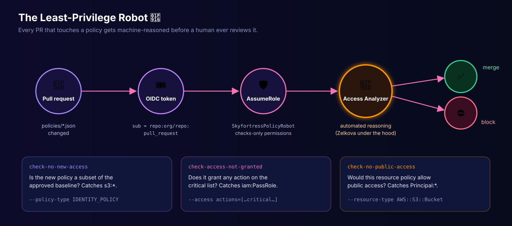
FIG L1.4 The robot never sees a long-lived credential and can only call the three check APIs.
The approved baseline (reference/baseline-identity.json) lets telemetry apps read/write nimbus-telemetry-* buckets and use the telemetry queues. Open the five files in robot/policies/. For each, predict PASS or FAIL and which check would catch it. Write it down. Really.
cd ~/sky/day1/robot && for f in policies/*.json; do echo "== $f"; jq -c '.Statement[] | {Sid,Effect,Principal,Action,Resource,Condition}' "$f"; done
Each answer is a proof, not a heuristic. 02-dream narrows a wildcard bucket name and drops actions — the solver confirms it's a strict subset of the baseline.
02-dream looks nothing like the baseline textually: different resource strings, fewer actions. Will check-no-new-access pass it?
Reveal
PASS. The check compares the sets of requests each policy allows, not the text. Narrowing nimbus-telemetry-* to one bucket and dropping actions can only shrink that set.
$aws accessanalyzer check-no-new-access --policy-type IDENTITY_POLICY … --new-policy-document file://policies/02-dream.identity.json --query '{result:result,msg:message}'
{
"result": "PASS",
"msg": "The modified permissions do not grant new access compared to your existing policy."
}
$aws accessanalyzer check-access-not-granted … --access '[{"actions":["iam:PassRole"]}]' --query '{result:result,reasons:reasons}'
{
"result": …,
"reasons": [ … ]
}
Exact message wording can vary by API version. Only result (PASS or FAIL) and the reasons[].statementIndex matter to the robot. The second result is left for you to predict.
Output format for a single file. Run it over the whole policies/ folder yourself: the failing filenames are the flag, so they're not shown here.
Assemble the flag
Take the word in each failing filename (e.g. 01-robots.identity.json), in file order, join with underscores, and wrap it: SKY{word_word_word}.
Fix 01-robots the right way
Replace s3:* with exactly what the app needs (s3:GetObject, s3:PutObject, s3:ListBucket) and rerun the robot on that file. Then ask: why did s3:* fail both checks?
Deploy the OIDC provider and robot role — and study the trust policy
Open github-oidc-role.yaml. The trust condition pins sub to repo:<you>/skyfortress-policies:pull_request. Its permissions are only the three check APIs plus ValidatePolicy.
The check fails: s3:PutBucketPolicy is both new access and on the critical list. Open the run page — the job summary shows the robot's table.
06-sneaky keeps the same bucket ARNs as the baseline and adds just one action. Which of the robot's checks fail?
Reveal
Both identity checks.check-no-new-access fails because s3:PutBucketPolicy wasn't in the baseline, and check-access-not-granted fails because it's on the robot's critical-actions list. Small textual diffs can be big permission diffs.
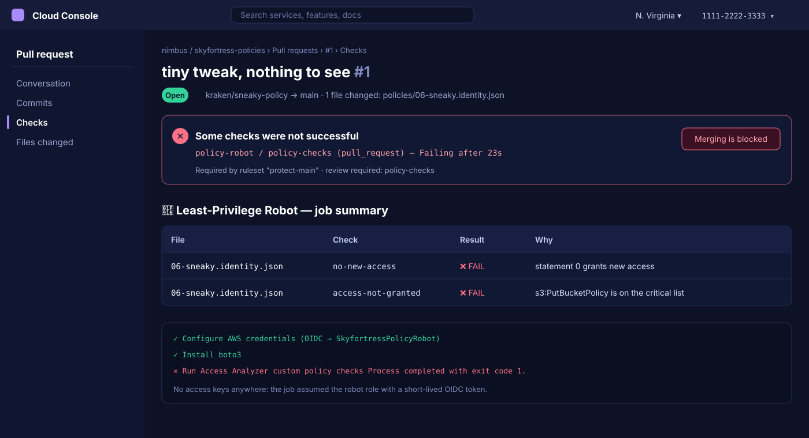
SCREEN 1.4a What “blocked” looks like once the ruleset in the next step requires policy-checks. The OIDC step is green: no keys were involved. Illustrative mock-up; the live console layout may differ.
Make the robot mandatory
In GitHub: Settings → Rules → Rulesets → New branch ruleset targeting main, enable Require status checks to pass and add policy-checks. Now a human literally cannot click merge on a policy the robot rejects (unless they're a bypass actor — audit that list).
Attack your own OIDC trust (thought experiment → real test)
What if the trust used StringLike with repo:*? Any GitHub repo could assume the robot. Verify the pin is effective: push the same workflow to a different repo you own and watch configure-aws-credentials fail with "Not authorized to perform sts:AssumeRoleWithWebIdentity".
Turn on unused-access analysis for the dev account
aws accessanalyzer create-analyzer --analyzer-name sky-unused --type ACCOUNT_UNUSED_ACCESS \
--configuration '{"unusedAccess":{"unusedAccessAge":30}}'
# Findings take a while to generate. Come back tomorrow and run:
ANALYZER=$(aws accessanalyzer list-analyzers --type ACCOUNT_UNUSED_ACCESS --query 'analyzers[0].arn' --output text)
aws accessanalyzer list-findings-v2 --analyzer-arn "$ANALYZER" \
--query 'findings[].[findingType,resource,status]' --output table
Expect UnusedIAMRole and UnusedPermission findings for the lab roles (roles created today won't show as unused until they've existed for the tracking period, so the first day is often quiet). For an UnusedPermission finding, aws accessanalyzer generate-finding-recommendation + get-finding-recommendation produce a trimmed policy you can feed straight into… the robot.
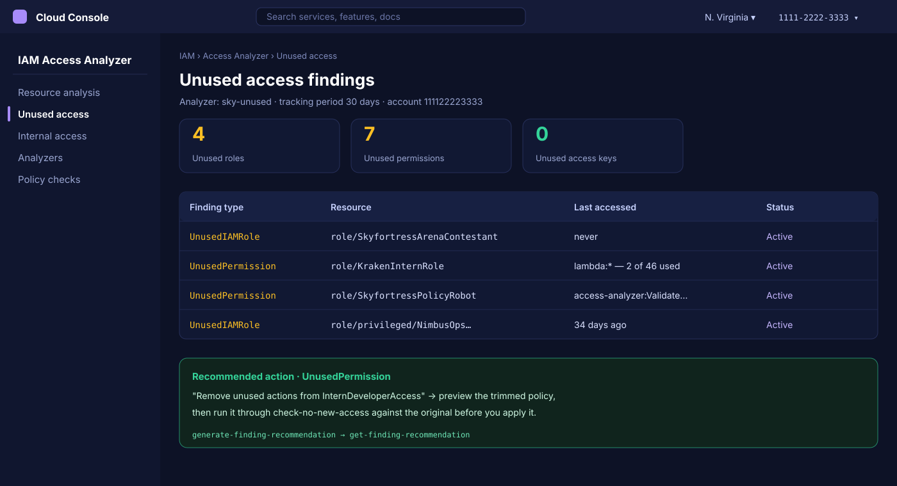
SCREEN 1.4b A few days later. Every UnusedPermission finding comes with a recommended, trimmed policy. Run it through the robot before applying it. Illustrative mock-up; the live console layout may differ.
A red ❌ on your PR, a ruleset that requires policy-checks, and an analyzer named sky-unused in ACTIVE status. If configure-aws-credentials fails on your own PR, check the sub: PRs from forks or pull_request_target events produce different claims.
Troubleshooting
Symptom
Likely cause
Fix
ValidationException from check-no-public-access
Wrong --resource-type for the policy
Bucket policies use AWS::S3::Bucket
configure-aws-credentials: Not authorized to perform sts:AssumeRoleWithWebIdentity
The token's sub doesn't match the trust policy (wrong repo name, or a fork / pull_request_target event)
Compare the sub in the trust policy with repo:<owner>/skyfortress-policies:pull_request
Could not load credentials in the workflow
Missing permissions: id-token: write
Keep the permissions block from policy-robot.yml
Stack fails: EntityAlreadyExists for the OIDC provider
This account already has a GitHub OIDC provider
Redeploy with CreateProvider=false
PR is red but the Merge button still works
The ruleset isn't active, or you're a bypass actor
Set the ruleset to Active and review its bypass list
Hint: "No OpenIDConnect provider found"
The provider must exist in the same account as the role, with URL https://token.actions.githubusercontent.com and audience sts.amazonaws.com. And the workflow must have permissions: id-token: write, otherwise GitHub never issues the token.
Add a fourth gate: run aws accessanalyzer validate-policy in the robot and fail on any SECURITY_WARNING finding (e.g. PassRole with NotResource). Or swap in AWS's own cfn-policy-validator GitHub Action and compare its output on a CloudFormation template.
aws accessanalyzer delete-analyzer --analyzer-name sky-unused --profile sky-dev # after tomorrow's review!
aws cloudformation delete-stack --stack-name sky-robot --profile sky-dev
gh repo delete skyfortress-policies --yes # or keep it as a template for your team
Boss fight
The final door of the day
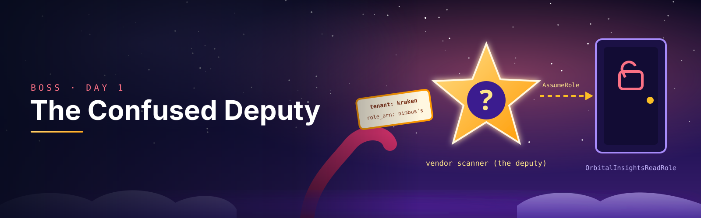
Boss · 35 min · 400 XP · unlocks Day 1 badge
The Confused Deputy
Nimbus uses Orbital Insights, a SaaS that scans customer accounts by assuming a role you create. The Kraken signed up as a customer too. The SaaS behaves correctly — it always sends each tenant's own ExternalId. But Nimbus's role trust was pasted from an old blog post and doesn't check it. Can a paying stranger make the vendor read Nimbus's secrets?
Seven steps: deploy vendor and victim, scan legitimately, attack as the Kraken tenant, fix the trust, re-test.
Goal: as tenant kraken, get the vendor to return Nimbus's report, then make that impossible without breaking tenant nimbus. Constraint: change only Nimbus's role. Accept when:kraken → ASSUME_FAILED, nimbus → SCANNED.
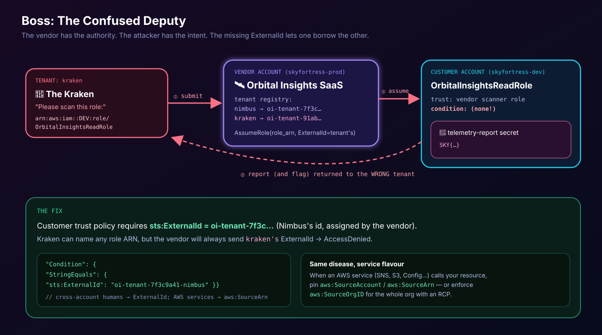
FIG B1 Authority from one party, intent from another. The ExternalId binds them back together.
Deploy the vendor (in prod, playing the SaaS's AWS account)
Look hard at that trust policy. Something's missing.
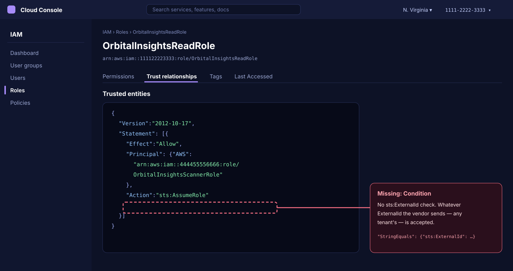
SCREEN B1 The trust policy as the console shows it. The principal is right, but there's no Condition, so the vendor's ExternalId is never checked. Illustrative mock-up; the live console layout may differ.
You log in to the SaaS as the Kraken and, in the "connect your AWS account" box, paste Nimbus's role ARN (role names for SaaS integrations are usually documented — easy to guess). The vendor sends kraken's ExternalId. Predict: does Nimbus's role accept it?
aws lambda invoke --profile sky-prod --function-name OrbitalInsightsScanner --cli-binary-format raw-in-base64-out \
--payload "{\"tenant\":\"kraken\",\"role_arn\":\"$VICTIM_ROLE\"}" kraken.json >/dev/null && jq . kraken.json
jq -r '.report.flag_b64 // empty' kraken.json | base64 -d; echo # the boss flag, if the attack worked
A trust policy without a condition on sts:ExternalId ignores whatever ExternalId is sent. The vendor was the deputy, and it got confused.
The wrong tenant got Nimbus's report. That's the boss flag, redacted here.
Fix the trust policy
sed "s|VENDOR_SCANNER_ROLE_ARN|$VENDOR_ROLE|" fixed-trust-policy.json > trust.json
aws iam update-assume-role-policy --profile sky-dev --role-name OrbitalInsightsReadRole --policy-document file://trust.json
Re-run both tenants
for T in kraken nimbus; do
aws lambda invoke --profile sky-prod --function-name OrbitalInsightsScanner --cli-binary-format raw-in-base64-out \
--payload "{\"tenant\":\"$T\",\"role_arn\":\"$VICTIM_ROLE\"}" $T.json >/dev/null; echo "$T → $(jq -r .status $T.json)"
done
kraken → ASSUME_FAILED, nimbus → SCANNED. The vendor's per-tenant secret now binds Nimbus's role to Nimbus's tenancy.
After the fix, the vendor sends kraken's ExternalId for the Kraken tenant. What does Nimbus's trust policy do with it?
Reveal
Denies the AssumeRole. The condition requires sts:ExternalId to equal Nimbus's value (oi-tenant-…-nimbus), and the vendor never sends that value for any other tenant. The vendor's error comes back as ASSUME_FAILED.
$for T in kraken nimbus; do …; done
kraken → ASSUME_FAILED
nimbus → SCANNED
Exactly one tenant can scan Nimbus now. If both fail, the ExternalId in trust.json doesn't match the vendor's registry: compare it with the stack output NimbusExternalId.
Explain the service-principal flavour
In two sentences: why does a bucket policy letting cloudtrail.amazonaws.com write need aws:SourceArn or aws:SourceAccount, and how does the RCP from Lab 1.3 (EnforceConfusedDeputyProtection, using aws:SourceOrgID) cover that across every account at once?
Troubleshooting
Symptom
Likely cause
Fix
Both tenants get ASSUME_FAILED after the fix
VENDOR_SCANNER_ROLE_ARN or the ExternalId in trust.json is wrong
jq . trust.json; compare with the sky-vendor outputs ScannerRoleArn and NimbusExternalId
Both tenants get SCANNED after the fix
update-assume-role-policy went to the wrong account
Run it with --profile sky-dev; the role lives in dev
ResourceNotFoundException invoking the scanner
Vendor stack is in prod; you invoked it in dev
Use --profile sky-prod for every lambda invoke
Gotcha: ExternalId is not a password
It isn't secret from the vendor and doesn't need to be secret from the world. Its job is uniqueness per tenant, chosen by the vendor. If a SaaS lets customers type their own ExternalId, the protection collapses — the Kraken would just type Nimbus's.
Scenario questions. 20 XP each. Explanations unlock after you answer.
An SCP attached to the Workloads OU allows only s3:* and ec2:* (FullAWSAccess has been detached). A role in a Workloads account has the AdministratorAccess managed policy. What can it do?
Effective permissions are the intersection: SCP ceiling (S3 + EC2) ∩ identity grant (everything) = S3 + EC2. Wildcards work fine in both; nothing needs to be "listed by name".
A Kraken account outside your org has a role with s3:GetObject on *. Your bucket policy accidentally allows "Principal": "*" for s3:GetObject. Which control stops the read, regardless of the bucket policy?
SCPs only constrain principals in your org — the Kraken's role isn't one. RCPs constrain access to your resources from anyone. Boundaries attach to users/roles, not buckets.
Your role has lambda:CreateFunction and iam:PassRole with "Resource": "arn:aws:iam::*:role/app/*" and condition iam:PassedToService = lambda.amazonaws.com. Which call succeeds?
Only (d) matches both the resource path and the service condition. (a) is passed to EC2, (b) is the wrong path, (c) needs a different permission entirely.
Same account. A bucket policy grants s3:GetObject to arn:aws:sts::111122223333:assumed-role/Analyst/alice. Alice's role has a permissions boundary that doesn't include S3. Can Alice read?
The same-account shortcut applies when the resource policy names the role session (or an IAM user). Had it named the role ARN, the boundary would cap it. This is the dashed arrow in FIG 1.1.
Your GitHub OIDC role trust policy has StringEquals on aud = sts.amazonaws.com and nothing else. What's the risk?
Every GitHub Actions token has the same issuer and the aud you request. Only the sub (and similar claims) identifies the repo/branch/environment. Without pinning it, the trust is "anyone on GitHub".
You want every account in the org to enforce IMDSv2 by default, including accounts whose admins might try to change the account-level default later. Best tool?
The SCP (a) is a good complementary control, but the declarative policy pins the service configuration itself so it can't be changed in the account. RCPs don't cover EC2. Config detects and fixes after the fact.
Which statement about SCPs in 2026 is false?
SCPs (and RCPs) never apply to the management account, no matter where they're attached. That's why it should hold no workloads. The other three reflect the 2025–2026 changes.
A SaaS vendor lets each customer type their own ExternalId in the onboarding form. What's wrong?
The vendor must assign a unique ExternalId per tenant and always send the authenticated tenant's value. Customer-chosen values can be copied.
Your data perimeter SCP denies S3 access unless aws:ResourceOrgID matches your org. Overnight, EC2 instances fail to install packages. Most likely cause?
Classic perimeter gotcha. Some AWS-managed artifacts live in AWS-owned buckets. Production perimeters carve out those known resources explicitly (see AWS's data-perimeter-policy-examples) instead of loosening the whole policy.
Access Analyzer check-no-new-access returns PASS for a new policy compared to your baseline. What does that guarantee?
It's a proven subset relation: no new access. The policy can be smaller or textually very different. Public access is a different check, and SCPs aren't considered.
Debrief
What you defended today
OWLSLEY · end-of-day transmission
The Kraken came at us four ways today — a PassRole side door, a public bucket policy, a pipeline trust, and a confused vendor — and every one of them was a policy, not a vulnerability. You closed each with layers: one in the account, one at the boundary, one in the org. Tomorrow they'll stop knocking on the front door and start moving quietly. Day 2 is about seeing them do it. Get some sleep. Hoo.
🔑 Remember
Default deny · explicit deny wins · guardrails never grant. Trace any surprise through the seven steps.
🧱 Build
SCP for your principals, RCP for your resources, declarative for your configuration, endpoint policies for your networks.
🤖 Automate
Generate from CloudTrail, trim with unused access, gate with custom policy checks. Humans review intent; robots prove properties.